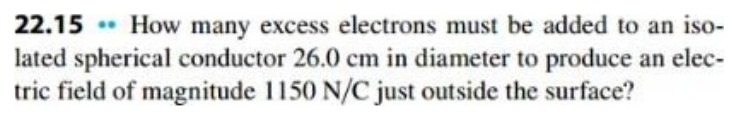
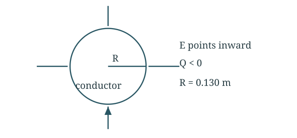
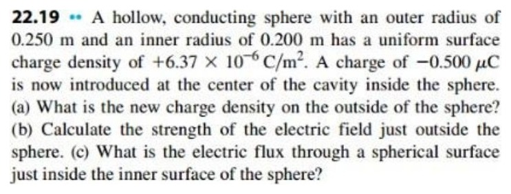
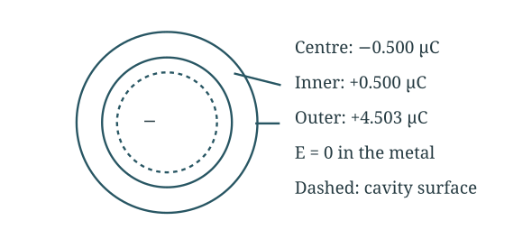
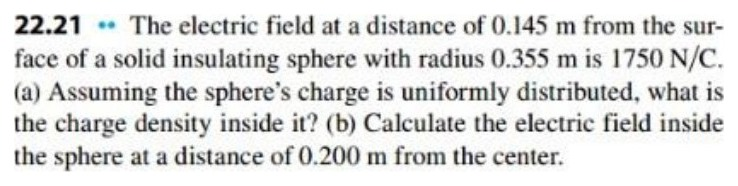
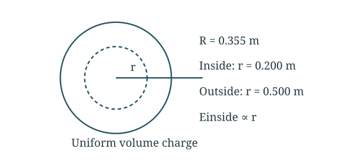
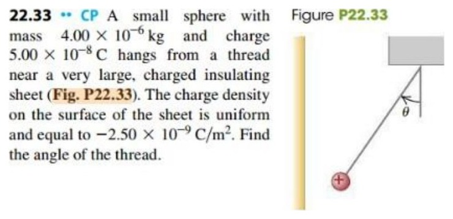
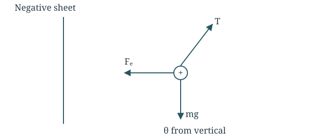
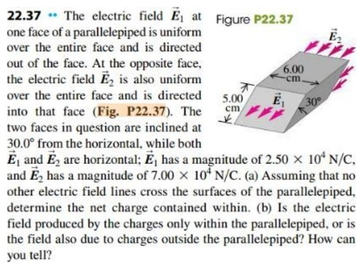
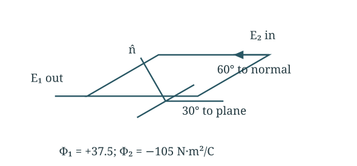

Physics Homework 4
Gauss’s law · Worked solutions
5 assigned questions with the setup, substitutions and final answers.
Question 122.15 · Excess electrons on a conducting sphere
A spherical conductor has diameter 26.0 cm. How many excess electrons produce a field magnitude of 1150 N/C just outside its surface?
Original question


Find the sphere radius
The radius is half the diameter.
Find the charge magnitude
Apply Gauss’s law just outside the conductor.
Count the excess electrons
The charge is negative, but the electron count is positive.
Final answer
1.35 × 10¹⁰ excess electrons; Q = −2.16 nC.
The count is positive, while Q = −2.16 nC. Using the diameter as R would give four times too many electrons.
Question 222.19 · Charge inside a conducting shell
A conducting spherical shell has outer radius 0.250 m, inner radius 0.200 m, and initial surface charge density +6.37 × 10⁻⁶ C/m². Place −0.500 µC at the centre of its cavity. Find (a) the new outer surface density, (b) the field just outside, and (c) the flux through a sphere just inside the cavity wall.
Original question


Find the shell’s original charge
The shell starts with charge only on its outer surface.
Part (a) Redistribute the charge
The inner surface carries −q so the field in the metal stays zero. The shell’s total charge stays fixed.
Part (b) Field just outside
The central charge and inner surface cancel in the total enclosed charge.
Part (c) Flux just inside the cavity wall
This Gaussian sphere encloses only the central charge.
Final answer
(a) +5.73 × 10⁻⁶ C/m²; (b) 6.48 × 10⁵ N/C outward; (c) −5.65 × 10⁴ N m²/C.
The shell still totals +5.003 µC. The cavity Gaussian sphere encloses only the negative point charge, so its outward flux is negative.
Question 322.21 · Uniformly charged insulating sphere
A solid insulating sphere has radius 0.355 m. The field magnitude 0.145 m beyond its surface is 1750 N/C. Find (a) its uniform volume charge density and (b) the field magnitude 0.200 m from its centre.
Original question


Part (a) Find the total charge
Measure the outside distance from the centre.
Divide by the sphere volume
A uniform volume charge fills the entire sphere.
Part (b) Find the inside field
Inside an insulator, the enclosed charge is proportional to r³.
Final answer
|ρ| = 2.60 × 10⁻⁷ C/m³; |E(0.200 m)| = 1.96 × 10³ N/C.
Only a field magnitude is specified, so the sign of the charge is not determined. For positive charge the field is outward; for negative charge it is inward. Inside, E grows linearly from zero at the centre, then falls as 1/r² outside.
Question 422.33 · Sphere suspended beside a charged sheet
A sphere of mass 4.00 × 10⁻⁶ kg and charge +5.00 × 10⁻⁸ C hangs beside a very large insulating sheet with surface charge density −2.50 × 10⁻⁹ C/m². Find the thread angle from vertical.
Original question


Find the sheet’s field
For a very large insulating sheet, use σ/(2ε₀).
Balance the forces
The positive ball is attracted toward the negative sheet.
Find the angle
The angle is measured from vertical.
Final answer
θ = 10.2° toward the negative sheet.
The sphere leans toward the sheet. Use the insulating-sheet field σ/(2ε₀), not the conductor-surface value σ/ε₀.
Question 522.37 · Flux through a slanted box
Two opposite faces of a box each measure 5.00 cm by 6.00 cm and are inclined 30.0° to a horizontal field. E₁ = 2.50 × 10⁴ N/C points out through one face; E₂ = 7.00 × 10⁴ N/C points in through the other. No field crosses the remaining faces. Find (a) the net enclosed charge and (b) what can be concluded about external charges.
Original question


Find the normal angle and area
The face is 30° to the field, so its normal is 60° to the field.
Part (a) Add signed fluxes
The first field leaves the box; the second enters it.
Part (b) Interpret the result
The net enclosed charge is negative. External charges may affect the local field, but their total flux through a closed box is zero. These flux readings alone cannot tell whether external charges are present.
Final answer
Qenc = −5.98 × 10⁻¹⁰ C. External contributions cannot be resolved from net flux alone.
(b) The inward net flux proves a negative net enclosed charge. Flux alone cannot determine whether external charges also contribute to the local field: their total closed-surface flux is zero. Do not infer the location of every source from the two field magnitudes; positive and negative charges could both be inside.